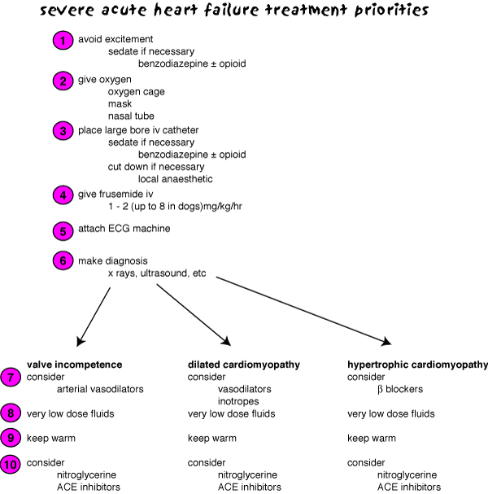

Acute heart failure
Acute heart failure can be caused by:
anaesthetic overdose
pericarditis
metabolic illness
Cases which occur outside the clinic will probably die.
Drugs used include positive inotropes (usually β1 agonists), iv fluids, antiarrhythmics and vasodilators (usually nitrates). They are given intravenously to effect and the animal is monitored very closely in intensive care.

Priorities for severe acute heart failure. Less severe failure
will need less aggressive treatment.
| 6 Cardiovascular index |
| |
copyright
Massey University
|